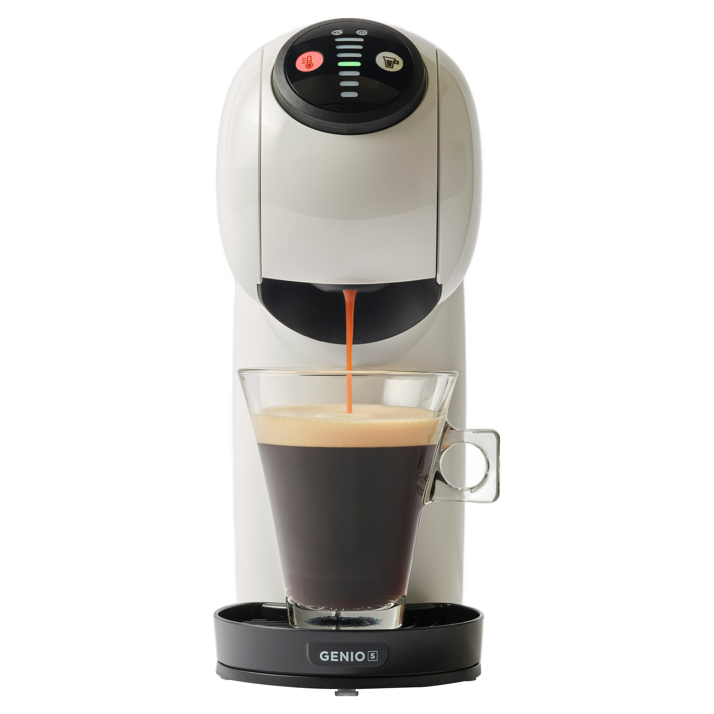
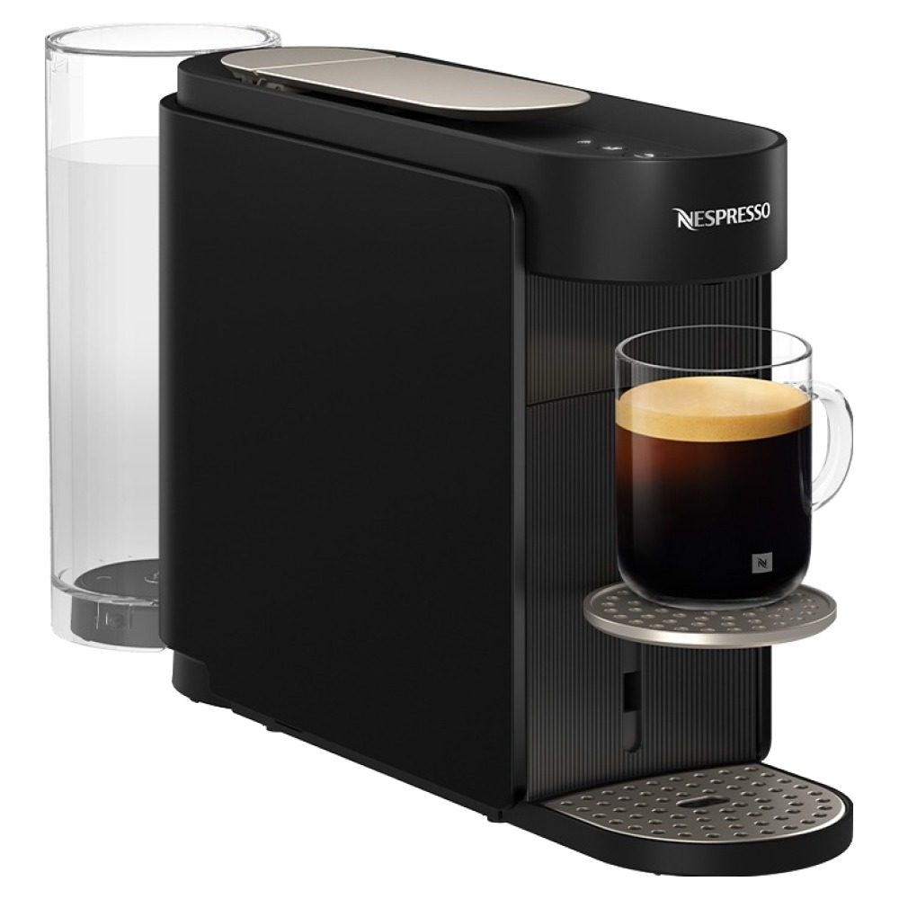
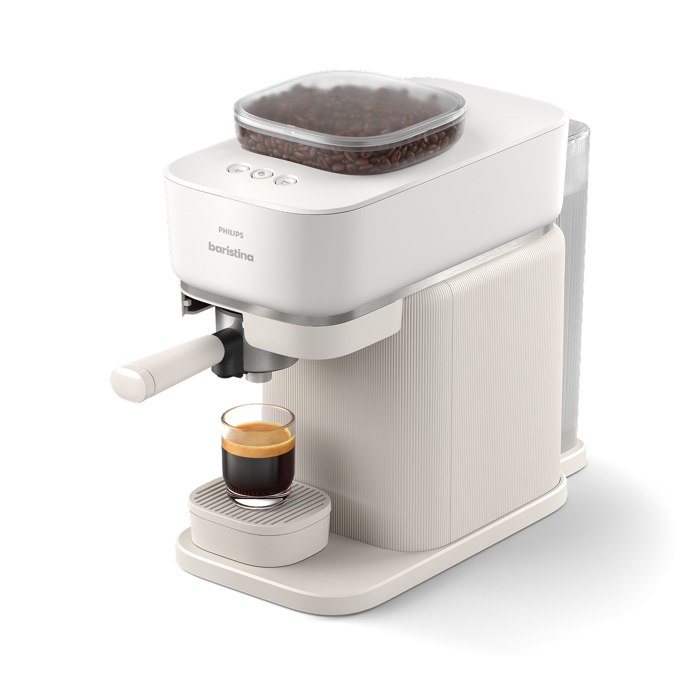

홈 › 제품리뷰 › 주방/조리
커피머신, 캡슐이 편할까 전자동 원두가 좋을까
작성: 생활서식 모음 · 2026-07-12
파트너스 활동의 일환으로 일정액의 수수료를 지급받습니다
🛒 오늘의 쿠팡 특가 보러가기 →
홈카페 시작하려는데 커피머신 종류가 너무 많죠?
핵심은 딱 하나, "캡슐이냐 원두냐" 3대 를
"편하게 다양한 음료" "정통 에스프레소" "원두 갈아 홈카페"스타일별 정답 까지 담았으니
📋 목차
커피머신, 캡슐이 편할까 전자동 원두가 좋을까 — 결론 먼저 스펙 비교표: 한눈에 보기 커피머신 고를 때 봐야 할 4가지 캡슐이냐 원두냐, 뭘 사야 할까? 자주 묻는 질문 (FAQ) 결론: 한 줄 요약
커피머신, 캡슐이 편할까 전자동 원두가 좋을까 — 결론 먼저
커피머신은 "캡슐의 편의냐, 원두의 맛·경제성이냐" 로 갈려요.네스프레소 버츄오 가 무난합니다. 라떼·다양한 음료를 저렴하게 시작할 거면 돌체구스토 캡슐, 원두를 갈아 제대로 홈카페를 할 거면 전자동입니다.
1 캡슐 입문·라떼 (가성비 초이스)
가성비

캡슐 입문·다양한 음료
1. 돌체구스토 지니오S 캡슐 커피머신
캡슐 종류 다양(라떼·초코 등) 본체 저렴, 홈카페 입문용 조작 간단, 관리 쉬움
에스프레소부터 라떼·음료까지
추천 대상
홈카페를 저렴하게 입문하는 분 아메리카노뿐 아니라 라떼·초코 등 다양한 음료를 원하는 분 조작·관리가 간단한 걸 원하는 분 장점
본체 가격이 저렴해 홈카페 입문 부담이 적음 돌체구스토 캡슐 종류가 다양해 라떼·초코 등 여러 음료를 만들기 쉬움 캡슐만 넣으면 돼 조작·청소가 간단 단점
정통 에스프레소 크레마·원두 풍미는 네스프레소·전자동보다 약함 정통 에스프레소·크레마를 원하면 2번 네스프레소, 원두를 갈아 제대로면 3번 전자동입니다. "다양한 음료를 편하게 입문"이면 이 캡슐머신이 부담 없어요.
한줄 리뷰
"커피머신 입문인데 라떼·초코도 마시고 싶다"면 돌체구스토가 무난합니다. 본체 싸고 캡슐 종류가 많아 다양하게 즐겨요. 정통 에스프레소·원두 풍미가 목적이면 2·3번으로.
주요 스펙
제품: 돌체구스토 지니오S 캡슐 커피머신 방식: 캡슐(다양한 음료) 강점: 입문 가격·음료 다양성·간편 배송: 로켓배송 가격: 약 66,800원 (변동 가능) ※ 실제 스펙·가격과 차이가 있을 수 있습니다
2 정통 에스프레소·크레마 (베스트 초이스)
베스트

네스프레소 정통 캡슐
2. 네스프레소 버츄오 업 캡슐 커피머신
풍부한 크레마의 정통 캡슐 버츄오 = 다양한 용량 추출 캡슐 편의 + 카페 퀄리티
캡슐의 편의로 카페 같은 크레마
추천 대상
캡슐의 편의는 유지하되 카페 퀄리티를 원하는 분 풍부한 크레마의 에스프레소·룽고를 즐기는 분 원두 관리는 부담스러운 분 장점
버츄오 방식으로 풍부한 크레마의 카페 같은 커피를 캡슐로 편하게 용량별 캡슐로 에스프레소부터 큰 컵까지 다양하게 추출 캡슐이라 원두 그라인딩·청소 부담이 적으면서 퀄리티가 높음 단점
전용 네스프레소 캡슐만 사용해 캡슐 유지비가 지속적으로 듦 다양한 음료·최저 입문가면 1번 돌체구스토, 원두를 갈아 경제적으로면 3번 전자동입니다. 2번은 "캡슐 편의 + 정통 크레마" 를 모두 원하는 분에게 무난합니다.
한줄 리뷰
"편의는 캡슐, 맛은 카페급"을 원하면 네스프레소 버츄오가 정석입니다. 크레마가 풍부해 만족도가 높아요. 다만 전용 캡슐값이 계속 드니, 원두로 유지비를 낮추려면 3번 전자동을 보세요.
주요 스펙
제품: 네스프레소 버츄오 업 캡슐 커피머신 (MD1-BK) 방식: 네스프레소 전용 캡슐(버츄오) 강점: 풍부한 크레마·용량별 추출 배송: 로켓배송 가격: 약 230,430원 (변동 가능) ※ 실제 스펙·가격과 차이가 있을 수 있습니다
3 원두 홈카페 (프리미엄)
프리미엄

원두 전자동 에스프레소
3. 필립스 바리스티나 전자동 커피머신
원두 그라인더 내장(갈아서 추출) 버튼 하나로 에스프레소 자동 캡슐값 없이 원두로 경제적
원두를 그때그때 갈아 내리는
추천 대상
원두를 갈아 신선한 커피를 즐기는 분 커피를 자주 마셔 캡슐값이 부담인 분 버튼 하나로 편하게 원두 커피를 원하는 분 장점
원두 그라인더가 내장돼 마실 때마다 갈아 신선한 풍미 버튼 하나로 에스프레소가 자동 추출돼 원두머신치고 편리 캡슐이 아닌 원두라 자주 마실수록 잔당 단가가 경제적 단점
40만원대로 초기 비용이 크고, 원두 찌꺼기·부품 청소 관리가 필요 가끔·소량이면 캡슐(1·2번)이 관리 면에서 편하고 초기비용도 낮습니다. 3번은 커피를 자주 마셔 원두 신선도·경제성 을 원하는 분에게 값어치가 있습니다.
한줄 리뷰
"매일 여러 잔, 원두로 제대로"면 전자동이 결국 이득입니다. 갈아 내려 신선하고 캡슐값이 안 들어요. 다만 초기비용·청소 관리가 있으니, 가끔 마시면 캡슐머신이 합리적입니다.
주요 스펙
제품: 필립스 바리스티나 전자동 커피머신 (BAR300/00) 방식: 원두 전자동(그라인더 내장) 강점: 신선한 원두 추출·잔당 단가 경제적 배송: 로켓배송 가격: 약 430,120원 (변동 가능) ※ 실제 스펙·가격과 차이가 있을 수 있습니다
스펙 비교표: 한눈에 보기
가격·풍량·무게 중 본인에게 중요한 기준부터 보세요. "최고" 표시는 3제품 중 객관적 1위 값입니다.
← 좌우로 스크롤 →
커피머신 고를 때 봐야 할 4가지
"캡슐이냐 원두냐"만 정해도 절반은 끝납니다. 이 4가지로 내 스타일에 맞게 고르세요.
1) 캡슐 vs 원두 — 가장 먼저 결정
캡슐: 편의·청소 쉬움, 대신 캡슐값이 지속됨원두 전자동: 신선·잔당 저렴, 대신 초기비용·청소가끔이면 캡슐, 매일 여러 잔이면 원두가 경제적 2) 유지비 — 잔당 단가로 보기
캡슐은 본체는 싸도 캡슐값이 계속 들어감 원두는 본체가 비싸도 잔당 단가가 낮아 자주 마실수록 유리 "본체값 + 캡슐/원두값"을 사용량으로 환산해 비교 3) 음료 다양성 — 아메리카노만? 라떼도?
다양한 음료(라떼·초코): 돌체구스토 캡슐이 폭 넓음정통 에스프레소·크레마: 네스프레소·전자동우유 거품(라떼) 자동 여부도 확인 4) 관리·크기 — 청소와 자리
원두머신은 원두 찌꺼기·물통·부품 청소가 주기적으로 필요 캡슐머신은 캡슐만 버리면 돼 관리가 간편 주방 공간·물통 용량도 함께 고려 캡슐이냐 원두냐, 뭘 사야 할까?
커피 마시는 빈도와 스타일만 정하면 답이 나옵니다.
다양한 음료·저렴 입문: 1번 돌체구스토 → 캡슐 입문정통 크레마 편하게: 2번 네스프레소 버츄오 → 캡슐 퀄리티매일 원두 홈카페: 3번 필립스 전자동 → 신선·경제적자주 묻는 질문 (FAQ)
Q1. 캡슐이랑 원두 전자동, 뭐가 더 나은가요? 커피를 얼마나 자주 마시는지로 갈립니다. 가끔 편하게 마시면 캡슐이 청소·관리가 쉽고 초기비용이 낮아 유리합니다. 반대로 매일 여러 잔을 마시면 캡슐값이 쌓여 부담이 커지므로, 원두를 갈아 쓰는 전자동이 잔당 단가가 낮아 경제적입니다. "가끔이면 캡슐, 매일이면 원두"가 기본 공식입니다.
Q2. 캡슐 커피는 유지비가 얼마나 드나요? 제품·브랜드마다 다르지만 캡슐 1개당 수백 원대가 일반적이라, 하루 여러 잔이면 한 달 캡슐값이 쌓입니다. 본체가 저렴해도 캡슐값이 지속적으로 들기 때문에, 커피를 자주 마신다면 "본체값 + 예상 캡슐값"을 함께 계산해보는 게 좋습니다. 자주 마실수록 원두 전자동의 경제성이 커집니다.
Q3. 돌체구스토랑 네스프레소는 뭐가 다른가요? 캡슐 종류와 커피 스타일이 다릅니다. 돌체구스토는 라떼·초코·차 등 다양한 음료 캡슐이 많아 "여러 음료를 즐기는 입문"에 좋습니다. 네스프레소(특히 버츄오)는 풍부한 크레마의 정통 에스프레소·룽고에 강점이 있어 "카페 같은 커피"를 원할 때 낫습니다. 다양성이면 돌체구스토, 정통 크레마면 네스프레소로 접근하세요.
Q4. 전자동 커피머신은 관리가 많이 번거로운가요? 캡슐머신보다는 손이 갑니다. 원두 찌꺼기를 비우고 물통을 채우며, 주기적으로 내부 세척·석회질 제거를 해줘야 합니다. 다만 요즘 전자동은 자동 세척 프로그램이 있어 예전만큼 복잡하지 않습니다. "신선한 원두 커피"의 가치가 청소 수고보다 크다고 느끼는 분에게 맞고, 관리가 싫으면 캡슐이 편합니다.
Q5. 홈카페 입문인데 처음부터 비싼 걸 사야 하나요? 아닙니다. 입문이라면 저렴한 캡슐머신으로 시작해 내 커피 취향·소비량을 파악한 뒤 업그레이드하는 게 합리적입니다. 다양한 음료를 즐기고 싶으면 돌체구스토, 에스프레소 중심이면 네스프레소로 시작해보고, 매일 여러 잔을 마시게 되면 그때 원두 전자동으로 넘어가면 초기 과투자를 피할 수 있습니다.
결론: 한 줄 요약
1) 돌체구스토 지니오S — 약 66,800원 / 캡슐 입문. 다양한 음료를 저렴하게, 홈카페 입문.2) 네스프레소 버츄오 업 — 약 230,430원 / 정통 캡슐. 캡슐 편의 + 풍부한 크레마.3) 필립스 바리스티나 전자동 — 약 430,120원 / 원두 홈카페. 갈아 내려 신선, 자주 마시면 경제적.이 포스팅은 쿠팡 파트너스 활동의 일환으로, 이에 따른 일정액의 수수료를 제공받습니다.